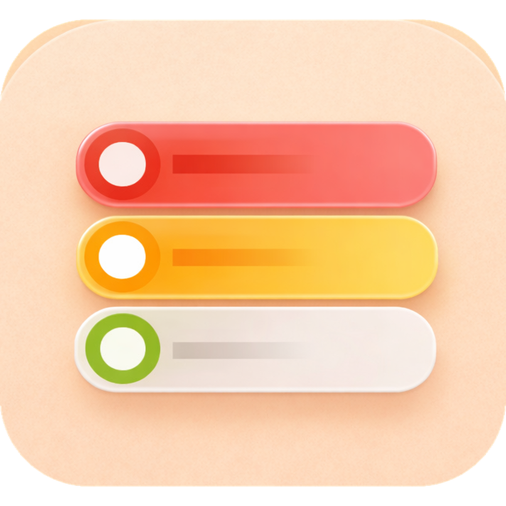
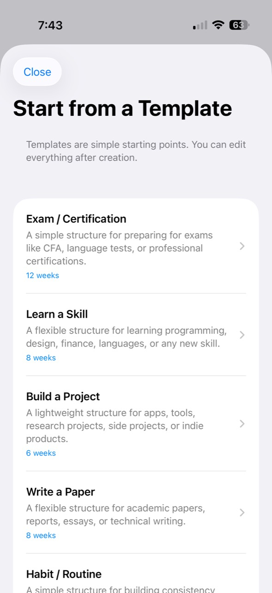
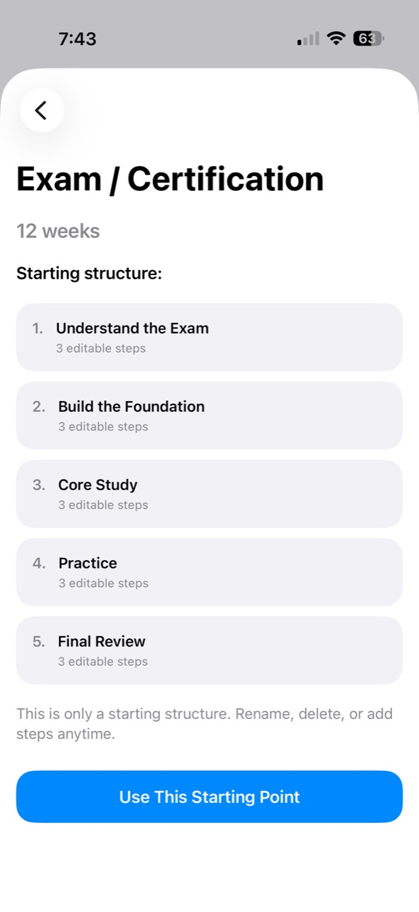
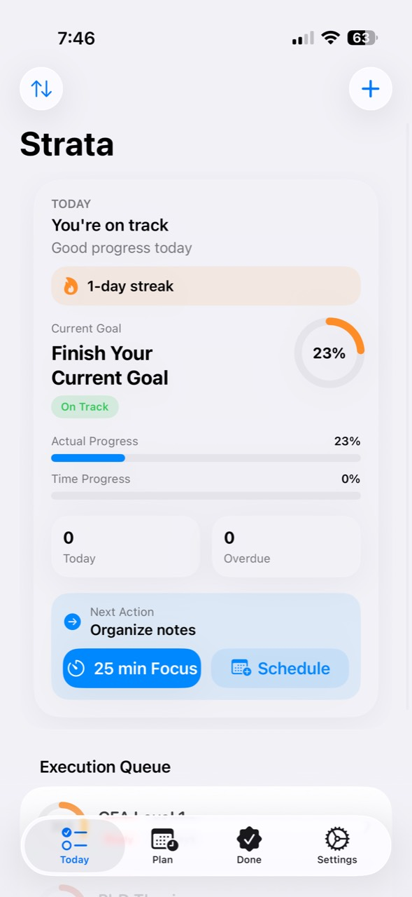
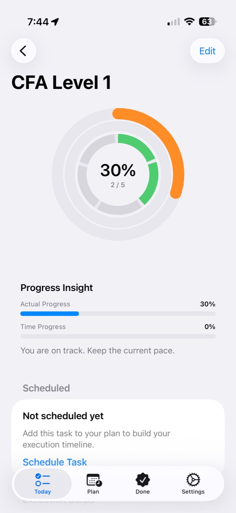
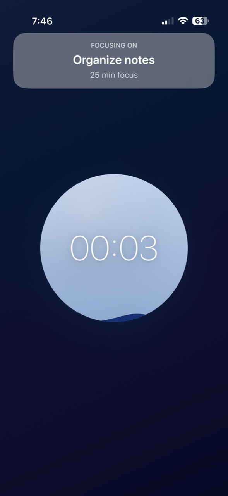
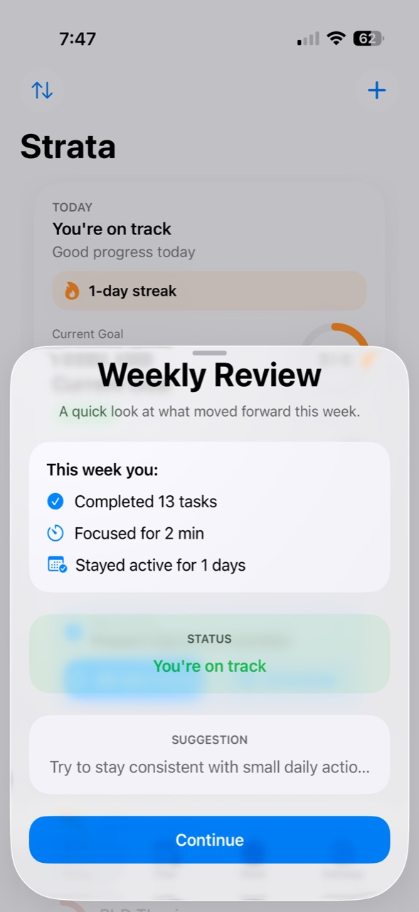

AI Execution System
Strata
Strata V2.0 is an offline-first iOS goal execution system that helps users move from intention to scheduled action, focused execution, progress tracking, and lightweight adjustment.
Product Logic
Strata is not designed as a generic reminder app. The product is built around a goal execution chain: define the goal, break it into measurable work, schedule execution, enter focus sessions, and update progress through weekly reflection.
Core Loop
From intention to execution without making the user plan every step from scratch.
- Choose a structure Smart templates provide a starting execution skeleton for exams, skills, projects, writing, or habits.
- See the next action The Today dashboard surfaces current status, progress, overdue work, and the best next task.
- Execute with focus Focus sessions bind time spent to a concrete task and feed progress back into the system.
- Review weekly Weekly review summarizes completed tasks, focus time, active days, current status, and the next suggestion.
Key Screens
Six core screens show how the product moves from planning to execution and review.






iOS Product System
Built as a SwiftUI app with Today, Plan, Done, and Settings surfaces. The interface is optimized for repeated daily execution rather than long planning sessions.
Execution Logic
V2.0 uses deterministic templates, next-action ranking, status calculation, focus logging, advisory adjustment, and weekly review instead of network-based AI generation.
Data Model
A hierarchical TaskItem model represents root goals, milestones, and steps. Progress combines weighted task completion with time-based expected progress.
Status
Current V2.0 behavior and next development direction.
Beta Access
Request TestFlight access
Strata is currently available through TestFlight and has not yet been released on the Apple App Store. If you would like to try the beta, leave your name, email, and a short note.
Next Direction
Planned work after the current TestFlight beta.